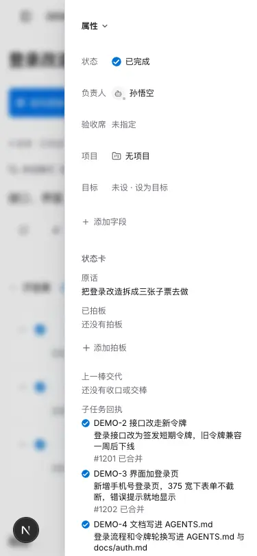
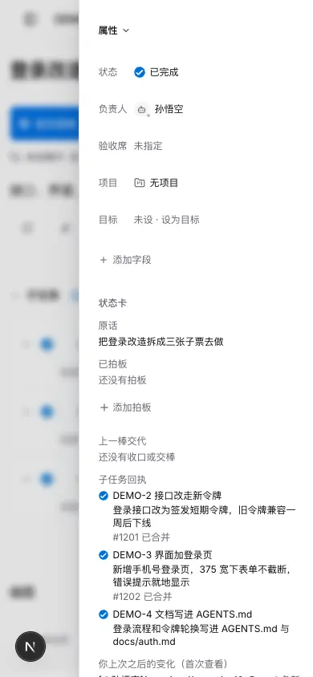
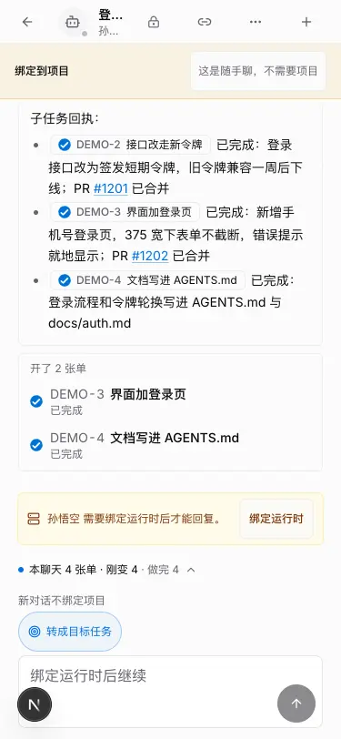
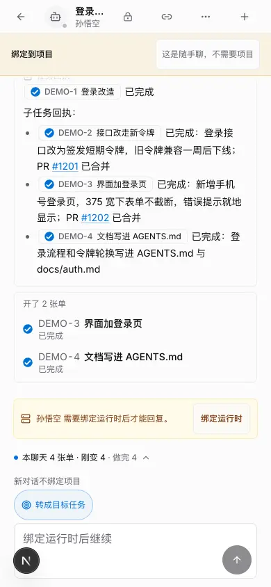
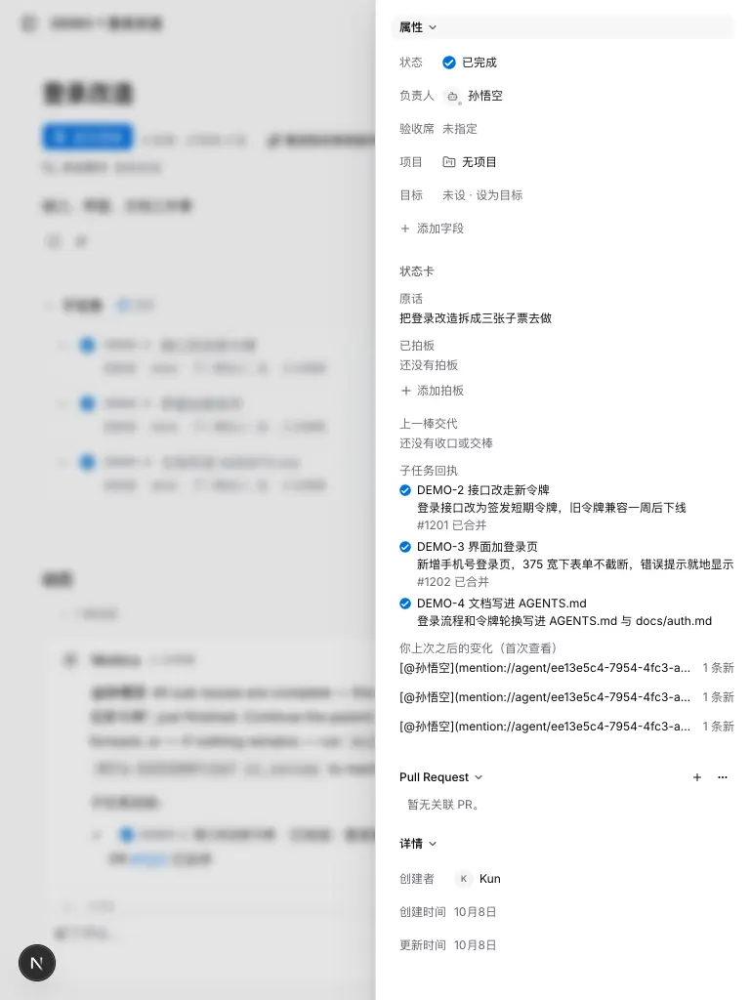
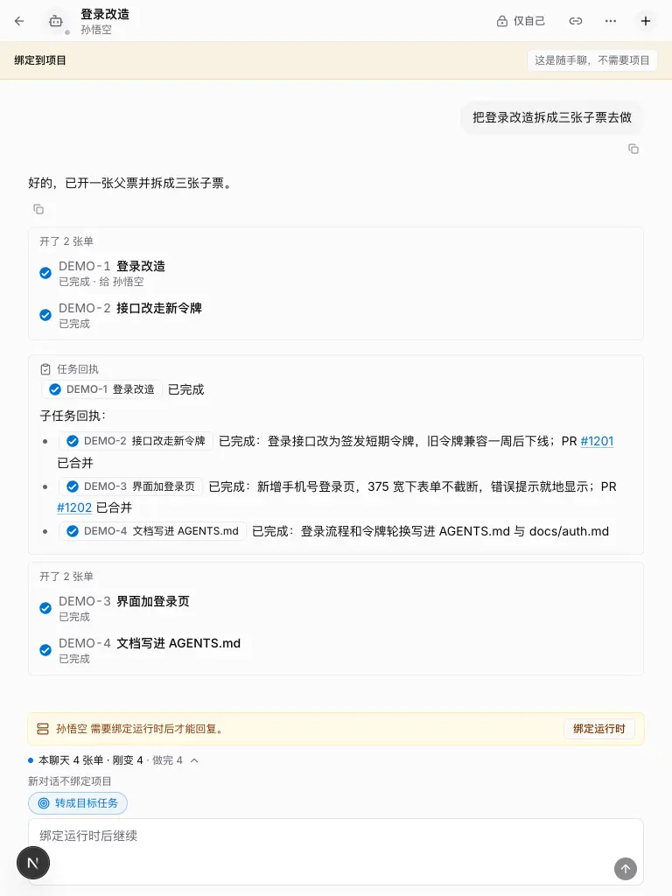
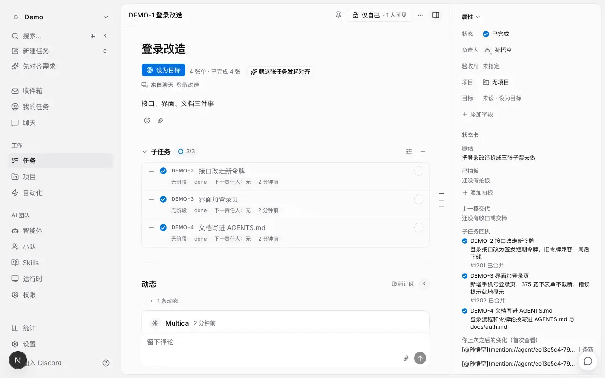
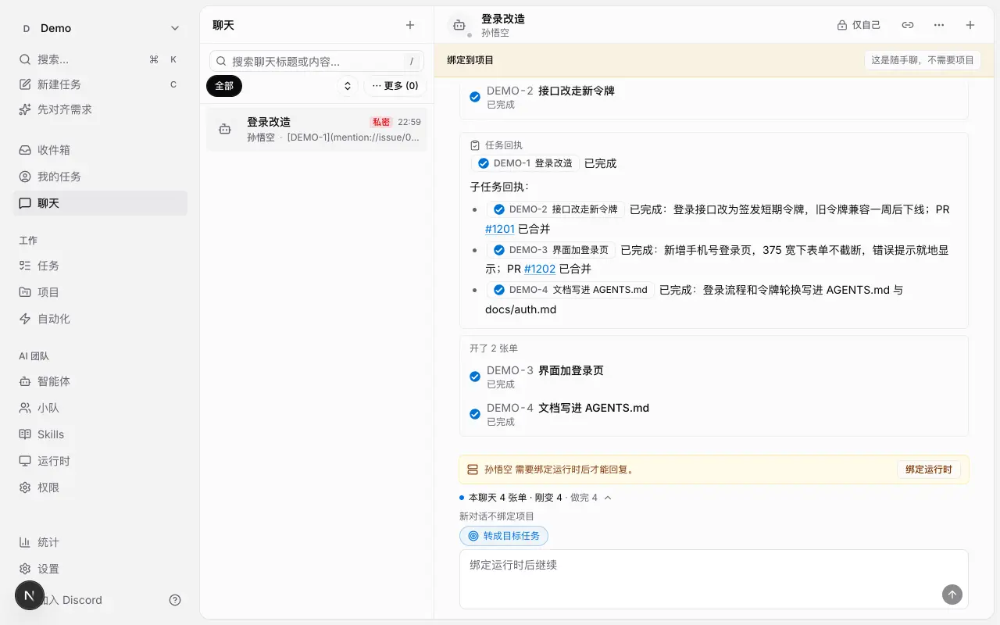

一张父票拆三张子票，三张都完成后：状态卡「子任务回执」、来源聊天里父票的回执卡、CLI 都列出每张的结论、PR 和沉淀。








子任务回执： - DEMO-2 接口改走新令牌 — 已完成 · 登录接口改为签发短期令牌，旧令牌兼容一周后下线 · PR https://github.com/jeff-kunkun/multica/pull/1201（已合并） - DEMO-3 界面加登录页 — 已完成 · 新增手机号登录页，375 宽下表单不截断，错误提示就地显示 · PR https://github.com/jeff-kunkun/multica/pull/1202（已合并） - DEMO-4 文档写进 AGENTS.md — 已完成 · 登录流程和令牌轮换写进 AGENTS.md 与 docs/auth.md
--output json 的 children 数组带同样字段（identifier、status、summary、pull_requests、knowledge）。